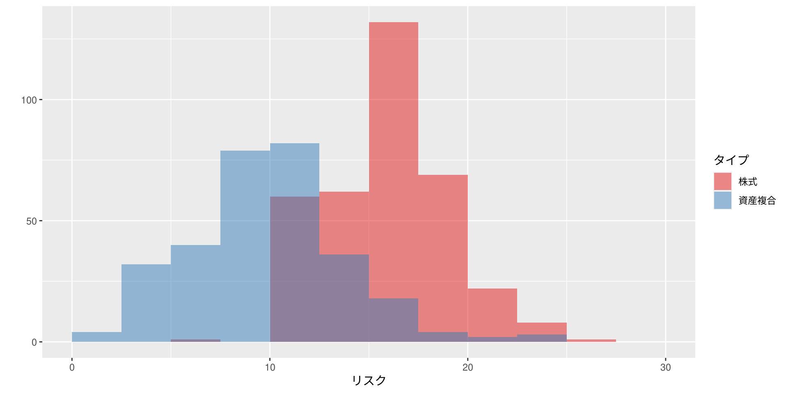
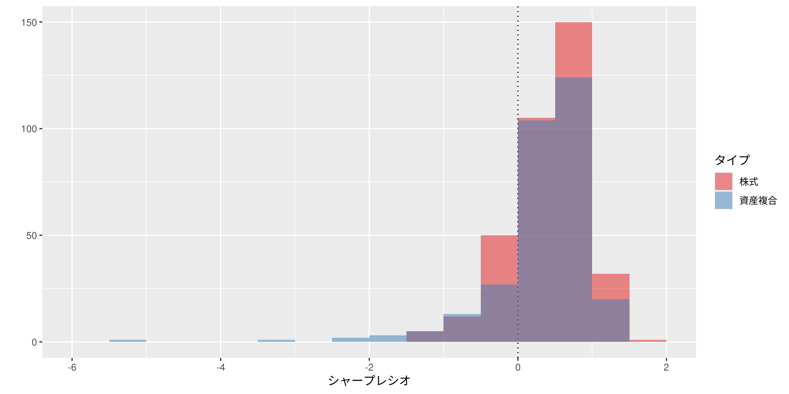
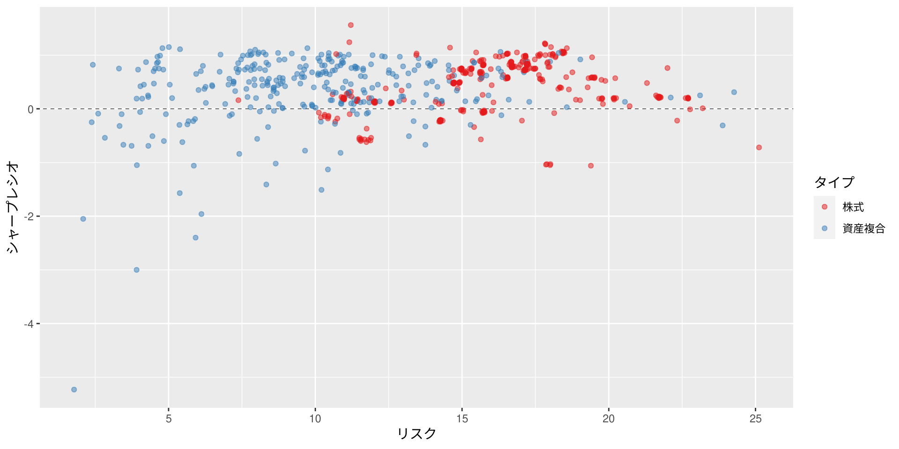
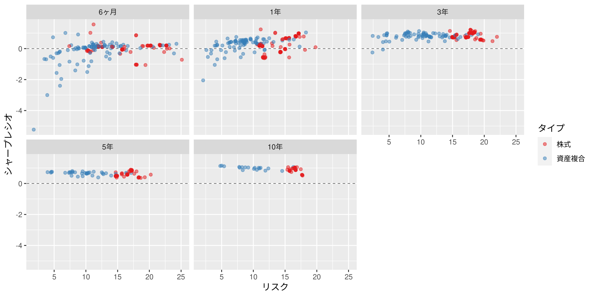
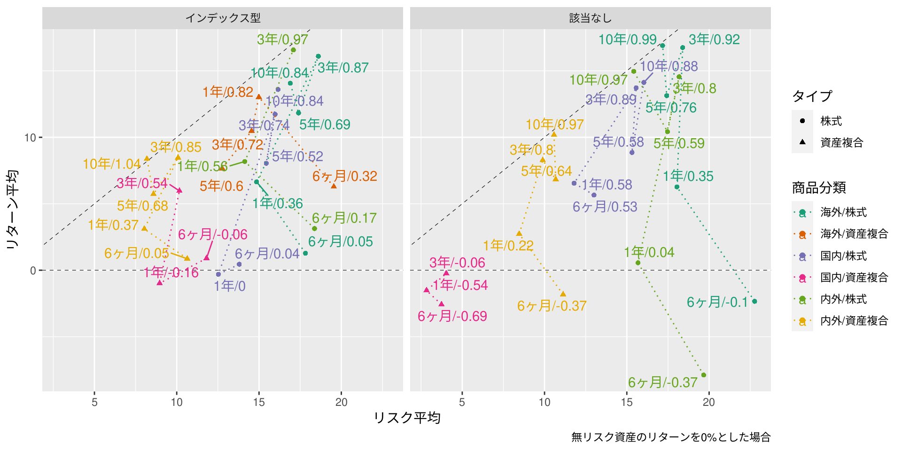

| 市場 | タイプ | インデックス型 | 該当なし |
|---|---|---|---|
| 海外 | 株式 | 41 | 2 |
| 海外 | 資産複合 | 2 | NA |
| 国内 | 株式 | 33 | 3 |
| 国内 | 資産複合 | 3 | 1 |
| 内外 | 株式 | 9 | 5 |
| 内外 | 資産複合 | 29 | 53 |
〜つみたてNISAを可視化する〜
2022/6/24
Important
| 市場 | タイプ | インデックス型 | 該当なし |
|---|---|---|---|
| 海外 | 株式 | 41 | 2 |
| 海外 | 資産複合 | 2 | NA |
| 国内 | 株式 | 33 | 3 |
| 国内 | 資産複合 | 3 | 1 |
| 内外 | 株式 | 9 | 5 |
| 内外 | 資産複合 | 29 | 53 |
項目名などの詳細は投信総合検索ライブラリー（投資信託協会）で確認してください
以降、同様
| インデックス | 市場 | タイプ | 6ヶ月 | 1年 | 3年 | 5年 | 10年 |
|---|---|---|---|---|---|---|---|
| インデックス型 | 海外 | 株式 | 41 | 41 | 38 | 21 | 11 |
| インデックス型 | 海外 | 資産複合 | 2 | 2 | 1 | 1 | NA |
| インデックス型 | 国内 | 株式 | 33 | 33 | 32 | 24 | 11 |
| インデックス型 | 国内 | 資産複合 | 3 | 3 | 2 | NA | NA |
| インデックス型 | 内外 | 株式 | 9 | 9 | 7 | NA | NA |
| インデックス型 | 内外 | 資産複合 | 29 | 29 | 29 | 16 | 7 |
| 該当なし | 海外 | 株式 | 2 | 2 | 2 | 2 | 2 |
| 該当なし | 国内 | 株式 | 3 | 3 | 3 | 3 | 3 |
| 該当なし | 国内 | 資産複合 | 1 | 1 | 1 | NA | NA |
| 該当なし | 内外 | 株式 | 5 | 5 | 4 | 4 | 2 |
| 該当なし | 内外 | 資産複合 | 53 | 48 | 42 | 18 | 12 |
スクレイピングで得られる運用情報は、各期間の騰落率・リターンの標準偏差（リスク）・シャープレシオですので、
\(\mbox{シャープレシオ} = \frac{\mbox{リターンの平均値} - \mbox{無リスク資産のリターン}}{\mbox{リターンの標準偏差}}\)
の関係を用いて、無リスク資産のリターン\(= 0\%\)として、リターンの平均値を算出、利用しています。
運用情報は2022年6月中頃に取得したものです





| 市場 | タイプ | インデックス型 | 該当なし |
|---|---|---|---|
| 海外 | 株式 | 0.21 | 3.00 |
| 海外 | 資産複合 | 1.00 | NA |
| 国内 | 株式 | 0.33 | 0.67 |
| 国内 | 資産複合 | 0.00 | 0.00 |
| 内外 | 株式 | 0.00 | 0.75 |
| 内外 | 資産複合 | 0.21 | 0.57 |
一部のデータは上限値を使用しています
| 市場 | タイプ | インデックス型 | 該当なし |
|---|---|---|---|
| 海外 | 株式 | 0.30 | 1.50 |
| 海外 | 資産複合 | 0.48 | NA |
| 国内 | 株式 | 0.25 | 0.86 |
| 国内 | 資産複合 | 0.23 | 0.38 |
| 内外 | 株式 | 0.18 | 0.65 |
| 内外 | 資産複合 | 0.34 | 0.42 |
| 1年 | 3年 | 5年 | 10年 | 20年 | 30年 |
|---|---|---|---|---|---|
| -0.086 | -0.058 | 0.004 | 0.251 | 0.773 | 1.044 |
財務省が公表している国債金利情報を元に2022年6月の各基準日の値を単純平均したものです
1年未満のデータは公表されていません
CC BY-NC-SA 4.0, Sampo Suzuki